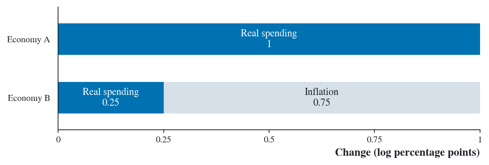

5 State Abstraction
\[ \newcommand{\E}{\mathbb{E}} \newcommand{\R}{\mathbb{R}} \newcommand{\Prob}{\mathbb{P}} \newcommand{\BR}{\operatorname{BR}} \newcommand{\eps}{\varepsilon} \newcommand{\given}{\,\vert\,} \newcommand{\argmax}{\operatorname*{arg\,max}} \newcommand{\argmin}{\operatorname*{arg\,min}} \newcommand{\sm}{\setminus} \newcommand{\defeq}{\equiv} \]
Chapter 3 uses a Q-table with one row per state. A state that the learner rarely visits gets few updates. Grouping states lets the learner use observations from several states to update the same row.
Definition 5.1 (State abstraction) A state abstraction is a map \(f\) from full states \(s\) to summaries \(x=f(s)\). Full states with the same summary are treated as one state.
The same choice comes up when solving a Bellman equation. In the pricing example below, the full state is the distribution of firms’ price gaps. Using its mean would give us fewer states to keep track of.
5.1 Predicting the next state
Given the full state \(s\) and action \(a\), the probability of a next summary \(y\) is the sum of the probabilities of all full states that map to \(y\). \[ \sum_{s':\,f(s')=y}p(s'\given s,a). \tag{5.1}\] For a single transition law on \(x\) to work from every starting state, this sum must agree across all \(s\) with the same \(x\), for each \(a\) and \(y\). If the expected reward \(r(s,a)\) also agrees across those states for each \(a\), we can write the Bellman equation on \(x\) alone.
5.2 Choosing an action
A policy using only \(x\) can be optimal from every starting state if and only if, for each \(x\), some action maximizes \(q^*(s,a)\) at every \(s\) that maps to \(x\).
To store the exact \(q^*(s,a)\) in a shared Q-table, all states with the same \(x\) must agree on the value of every action. At \(q^*\), samples for a given action then give the same Q-learning target on average. Li, Walsh, and Littman (2006).